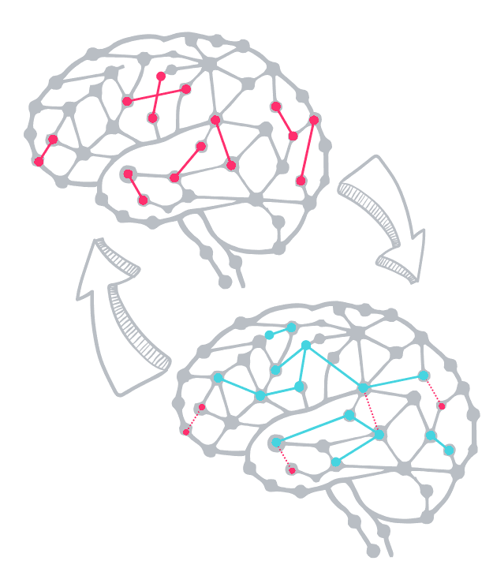
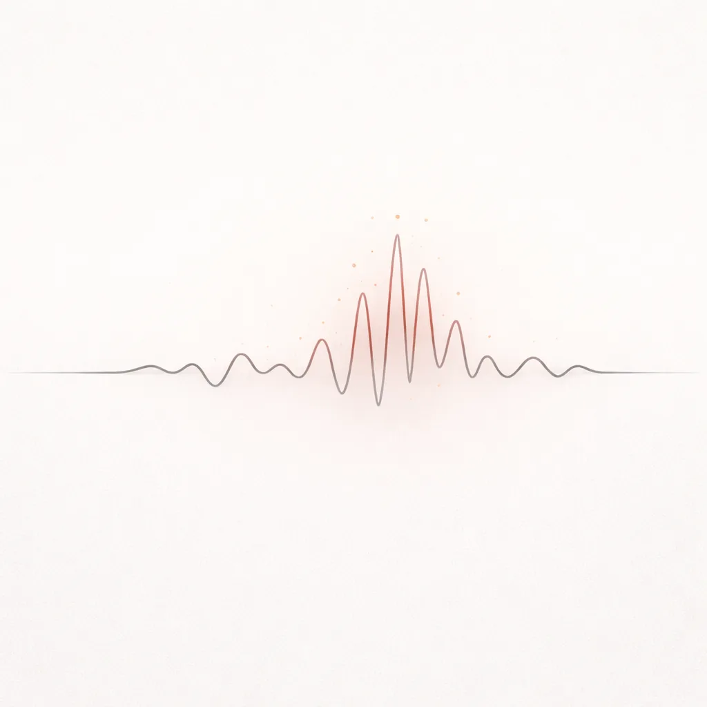
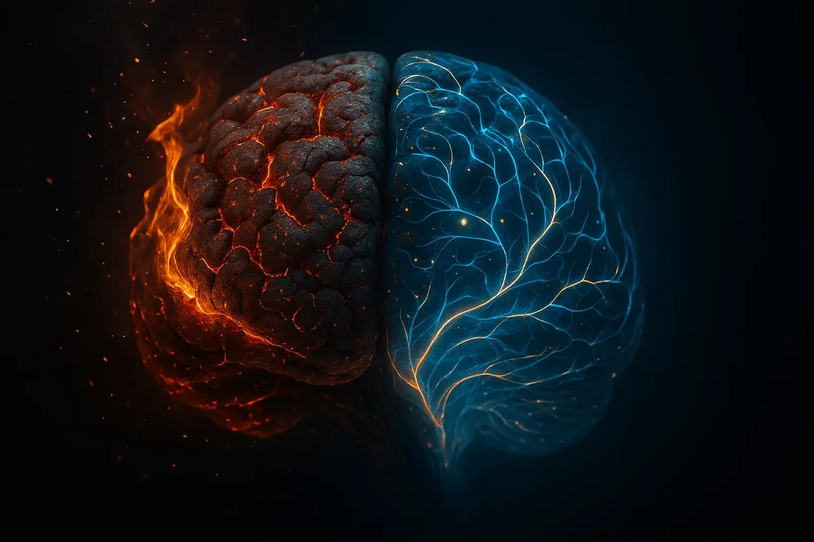
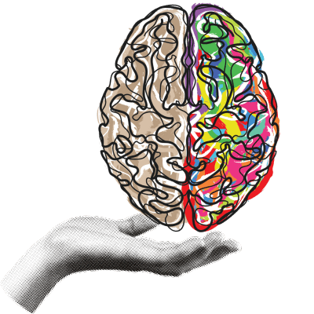

Ever feel like your own brain is working against you? Like something in you keeps firing the
old patterns — cravings, reactions, survival responses you've tried a hundred times to
outgrow? That's not weakness. That's not character. That's wiring.
But wiring can change. The same brain that learned to survive can learn something new.
That's not a metaphor. That's neuroplasticity.
For a long time, I was certain I was past the point of recovery. That years of addiction had
done something permanent — something you can't think or will your way out of. The shame made
it worse. It didn't feel like a belief. It felt like evidence.
What I eventually understood is that change was never about erasing what happened. It's about
recognizing that the brain doesn't stop being capable of adaptation just because you've been
through hell. It adapts through repetition, attention, and experience — whether you're
directing it or not. The question is whether you start directing it.
That's where neuroplasticity stops being a concept and starts being useful. It's the actual
mechanism behind sustainable recovery — the brain reorganizing, strengthening new pathways,
letting old ones weaken over time (Doidge, 2007). Not hope as a feeling. Hope as
a biological fact.
Once that clicked for me, recovery stopped feeling like a war against permanent damage.
It started feeling like something I could actually participate in — actively shaping
the brain I was going to have to live with.

The Mechanism of Change
What Is Neuroplasticity?
Think of your brain not as a fixed, rigid structure, but as a dynamic, ever-evolving landscape. Every thought you think, every action you take, every new experience you have, subtly reshapes the connections within it.
Neuroplasticity refers to your brain’s ability to reorganize itself by forming new neural connections throughout life. For much of the 20th century, the brain was believed to be largely fixed after early childhood. It’s only in recent decades that research has revealed how adaptable the brain really is, especially in response to experience and focused effort.
While your brain’s capacity for change is lifelong, it tends to become more effortful as we age. Like a trail that grows overgrown without use, rebuilding certain neural routes later in life requires more patience, repetition, and intention (Kolb & Gibb, 2014). That’s where the old saying “you can’t teach an old dog new tricks” gets it half right: it’s harder, but far from impossible.
In simpler terms: your brain can literally rewire itself.
Synaptic Pruning: Connections that aren’t used get weaker and may be eliminated, like trimming old branches so new ones can grow.
Long-Term Potentiation (LTP): Connections that are used frequently get stronger and more efficient, like well-traveled paths becoming smooth trails.
This is a fundamental principle of neuroscience, not just theory. And it means the brain conditioned by years of addiction can, with consistent effort, build new pathways for sobriety, resilience, and well-being.
Dr. Lara Boyd – A clear, practical explanation of neuroplasticity
This is one of the clearest explanations of neuroplasticity I’ve come across.
It breaks down how the brain actually changes — and why repetition, effort, and attention matter.
// The Science of Change
Why this concept matters for recovery
I came across this TEDx talk by Dr. Lara Boyd while trying to better understand
what was actually happening in the brain during change. It stood out because it’s simple,
direct, and grounded in real science.
She explains neuroplasticity — the brain’s ability to change its structure and function
based on what we repeatedly do. Not as a motivational idea, but as a biological process.
That distinction matters.
For me, this helped connect the dots. It explained why certain patterns felt automatic,
why change takes repetition, and why effort alone can feel inconsistent without the right conditions.
It gave context to something I had been experiencing without fully understanding.
Change isn’t random. It follows patterns. And once you understand those patterns,
the process becomes a lot less confusing.
// Neuroplasticity: Friend and Foe
It’s tempting to think of neuroplasticity as automatically positive — the miracle of change. But at its core, it isn’t good or bad. It just is.
The brain’s ability to rewire works in both directions. Every time you repeat a behaviour, thought, or coping strategy, you strengthen the pathways that support it — whether that’s playing piano, bracing for trauma, or reaching for a drink.
That's why avoiding discomfort reinforces avoidance, while gradually and safely staying with it — even for a few seconds longer each time — can help the brain learn that the discomfort is survivable.
This is the tough pill to swallow about neuroplasticity: without it, addiction itself wouldn’t be possible. The same mechanism that let you learn to walk or ride a bike is the same one that let substances and survival responses take root so deeply they became automatic.
However... using that same logic, the very force that made addiction possible is the one that makes recovery possible. If the brain can wire for survival, it can also rewire for growth. If it can learn pain, it can also learn healing.
Neuroplasticity is neither the hero nor the villain, it’s just the mechanism.
//
The Science of Hope — and Why Recovery Often Feels Harder Before It Gets Easier
Ever feel like your own brain is working against you? Like a traitor in your head — firing cravings, reflexes,
emotional surges, or survival responses you thought you’d already dealt with? That experience isn’t weakness.
It isn’t a lack of motivation. It’s learned wiring doing exactly what it was trained to do.
The uncomfortable truth — and the hopeful one — is this:
the brain doesn’t erase old learning. It learns to override it.
One of the most important (and least explained) aspects of neuroplasticity in recovery is something called
inhibitory relearning, sometimes referred to as extinction.
This is the process by which the brain learns that a once-reliable coping strategy — like drinking, using,
shutting down, or escaping — is no longer necessary for survival.
Here’s the part that trips up a lot of people in early recovery: when you stop reinforcing an old pattern, the brain doesn’t relax.
It often reacts by turning the volume up. Cravings can intensify. Emotional pressure can spike.
Thoughts become louder, more urgent, more convincing.
This doesn’t mean recovery is failing.
It means your brain is testing whether the old rule still applies.
Sometimes, when an old coping loop stops being reinforced, urges or distress can temporarily intensify before newer learning becomes more reliable — a pattern observed in behavioural research, though it doesn't unfold the same way for everyone.

The spike isn’t proof you’re getting worse — it’s often the nervous system running a “final check”
before it accepts that the old escape route isn’t required.
In other words: it is common for things to feel worse before they feel better.
Not because you're doing something wrong, but because your nervous system is learning — slowly and
imperfectly — that discomfort can be endured without escape.
A note: This is not a reason to white-knuckle a crisis alone. If distress is escalating to a point that feels unsafe — not just uncomfortable — that's a signal to reach out to a support person, therapist, or crisis line, not to wait it out. Intensity is normal. Danger is different.
This isn’t about mastering coping skills or distracting yourself from pain.
It’s about staying present long enough for your brain to register a new truth:
that the moment passes on its own.
Each time you sit with the urge, the fear, or the impulse without acting on it,
you provide your nervous system with evidence.
Not that it feels good — but that it is survivable.
This is why recovery is rarely a clean upward line. Progress is context-dependent.
You might feel steady in one situation and completely undone in another.
That doesn’t erase growth — it reveals which environments, emotions, or stress states
haven’t been retrained yet.
Neuroplasticity doesn’t promise a permanent cure or the complete disappearance of urges.
What it offers is something more realistic — and more powerful:
over time, the pause gets longer, the urges lose authority, and choice re-enters the picture.
Once you understand this, recovery stops feeling like a personal failure every time it’s uncomfortable.
It becomes a biological process — one where patience, repetition, and support are not signs of weakness,
but the very conditions the brain requires to change.
//
The Addiction Brain vs. The Recovering Brain
Addiction carves deep, efficient pathways in the brain, reinforcing cravings,
compulsive behaviours, and distorted thinking.
Reward Pathways:
Addiction hijacks the brain’s natural reward system, tying substances to intense pleasure or relief.
Prefrontal Cortex Impairment:
Areas responsible for decision-making, impulse control, and emotional regulation show altered structure and function — with reduced regulatory control often observed.
Stress & Trauma Response:
Addiction becomes a maladaptive coping mechanism, locking the brain into destructive loops.
Take, for example, someone who turned to alcohol in adolescence to numb overwhelming anxiety.
Over time, their brain linked drinking with relief, building a fast, well-worn pathway
that triggered cravings anytime discomfort appeared.
In recovery, they may struggle at first because the brain is still defaulting to those old loops.
But with therapy, support, and intentional effort, new associations form:
reaching out to a sponsor, journaling through a craving, practicing breathing techniques.
Slowly, the brain rewires, and the compulsive urge weakens.
The good news?
Over time, the very same mechanism that entrenched addiction can be used to build freedom.

// How Recovery Practices Leverage Neuroplasticity
Every effective recovery tool — from therapy to mindfulness — is like mental gym equipment, each one strengthening specific neural “muscles.” Just as your body won’t grow stronger without repeated training, your brain requires intentional practice to reshape itself.
Mindfulness & Meditation: Strengthen focus, emotional regulation, and self-awareness while calming the nervous system.
Cognitive Behavioural Therapy (CBT): Associated with changes in brain function over time by helping identify and reframe distorted thought patterns.
Dialectical Behaviour Therapy (DBT): Associated with improved emotional regulation and distress tolerance — and measurable shifts in how the brain processes difficult states.
Healthy Habits & Routines: Repetition of small, supportive actions — attending meetings, exercising, connecting — builds durable new networks.
Trauma-focused therapies like EMDR have strong evidence for directly targeting these patterns. Other approaches such as somatic therapies may also support this process — your therapist can help find what fits.
Rewiring the brain doesn’t feel graceful. It’s awkward, repetitive, and often discouraging. You stumble, backtrack, and wonder if you’re getting anywhere at all.
One of the best demonstrations I’ve ever seen of what this process actually looks like has nothing to do with addiction, and everything to do with a bicycle.
// A Real-World Example: Rewiring on a Bicycle
One of the most elegant and relatable demonstrations of neuroplasticity I’ve ever seen comes from Destin Sandlin of the YouTube channel Smarter Every Day. He set out to unlearn — and then relearn — how to ride a bicycle that had been modified so turning the handlebars left made the wheel go right, and vice versa.
It sounds simple, but it took him months of practice to retrain his brain, and then months more to switch back to a normal bike. That’s right, after mastering the “backwards bike,” he was no longer able to ride a regular one. He had to re-learn all over again.
What’s fascinating is that he later taught his young son to ride the same backward bike, and the boy mastered it in just a handful of tries.
Some might argue, “Well, he’s young, and hasn’t been riding that long — it’s easier to change.” And sure, there’s truth in that. But it’s also an elegant example of neuroplasticity in motion, using one of the most universal human activities to show just how rapidly adaptable we are as children, and how deeply capable we remain of change as adults when exposed to new stimuli.
It’s the same way emotional reflexes work — like snapping shut under stress or reaching for old coping tools. Those, too, can be retrained through repetition.
Why include this odd experiment here? Because it proves how stubborn, yet flexible, the brain really is. Just like you weren’t born an addict or trauma survivor, you learned patterns over time. And just like Destin with his bike, you can unlearn what hurts you and relearn what heals you.
A brilliant demonstration of neuroplasticity in action — seeing how hard it is to unlearn
something your brain wired long ago makes the concept unforgettable.
Note: While it took Destin months to master the backward bike, keep in mind he only practiced for about five minutes a day — and he had no real need to do it beyond curiosity. He did it purely as an experiment.
For those of us standing at the intersection of necessity and the desire to change, things move differently. When survival, healing, or freedom are on the line, the brain engages more fully. Change isn’t instant, but it’s also not as far off as it might feel. When you’re deliberate and intentional, progress accelerates.
The timeline of transformation isn't fixed. It's shaped by many things — support, biology, circumstances, and yes, sustained effort over time. Progress that looks slow from the inside is often still progress.
// The Bigger Lesson: New Is New
Whenever we're trying something unfamiliar — whether it's riding a backward bike or walking back into treatment for the eleventeenth time — new is new.
The new experience isn't just happening on the outside. While we're fumbling, doubting, or starting over yet again, our brains are busy laying down new neural pathways, quietly wiring themselves to support the thing we're struggling to learn.
Even relapse doesn't erase progress. It's a reminder that rewiring is still in motion. The path is still there — you just have to walk it again.
And not unlike a level that seems impossible the first time — or the fifth — something eventually shifts. The pattern reveals itself. What once felt unsurvivable begins, slowly, to feel navigable. That's not willpower. That's your brain doing exactly what brains do when you give them enough attempts.
Change isn't about instant mastery. It's about persistence — working with your brain, not against it, until something finally clicks and the unfamiliar begins to feel like ground.
That's not failure. That's neuroplasticity in real time.
Modified image based on a scene from Grand Theft Auto: San Andreas (Rockstar Games / Take-Two Interactive, 2004), used here as visual commentary on recovery and behavioural patterns. Not affiliated with or endorsed by the original creators.
*Included for commentary and educational purposes only. All rights remain with the respective copyright holders.

Understanding the System:
If You Want to Change the Brain, You Have to Understand It First
Neuroplasticity isn't a buzzword. It's a real, measurable process — and most people in recovery
are never shown how it actually works. They're told to change without being given any context
for what change actually requires. So they push harder — and wonder why nothing sticks.
These are the resources I wish someone had put in front of me years earlier. Not to give me
more information, but to make my own experience finally make sense: how patterns get wired in,
what conditions make rewiring possible, and why willpower alone was never going to be enough.
The Brain That Changes Itself — Norman Doidge
The clearest introduction to neuroplasticity I've come across. Real case studies, not
abstract theory. It shows how the brain rewires through focused attention and repetition —
and it was the first time I understood that change was actually possible, not just
something people say.
The Brain's Way of Healing — Norman Doidge
Goes further into the practical side — how environment, behaviour, and experience actively
shape recovery. I wish I'd had this during treatment. It would have changed how I
understood what I was even trying to do.
Neurodharma — Rick Hanson
Where it gets applied. How to use what you now understand about the brain in daily life —
attention, emotional regulation, reinforcing states worth keeping. Less about insight,
more about practice.
And then there's this one — which operates on a different level entirely:
How Emotions Are Made — Lisa Feldman Barrett
Not a how-to — more like a reckoning. Barrett shows how the brain constructs experience
based on what it's learned to expect, which means your reactions aren't just happening
to you — they're built. I needed to understand that before any of the other work
started to land.
This isn't about collecting more reading material. It's about getting the context I didn't have —
so the work you're already trying to do finally has something solid to stand on.
Final Word:
Recovery isn’t just abstinence. It’s the daily act of sculpting your brain toward who you want to become. Neuroplasticity doesn’t care if it’s carving addiction or healing, it will reinforce whatever you repeat.
The very mechanism that kept you stuck is also the one that will set you free.
Every small, repeated act is a signal to your brain: this is who I’m becoming.
Where to Next?
Follow the next step in order, or branch out into related topics.
Doidge, N. (2007). The Brain That Changes Itself.
Viking Press. Foundational text synthesizing decades of neuroplasticity research to demonstrate that the adult brain can reorganize after injury, learning, and therapy — directly countering the long-held view that the brain is largely fixed after childhood and challenging the hopelessness that long-term addiction or trauma is permanent brain damage.
View on Goodreads
Kolb, B., & Gibb, R. (2014). Searching for the principles of brain plasticity and behavior.Cortex, 58, 251–260. Peer-reviewed review establishing the governing principles of neuroplasticity across the lifespan — documenting that while plasticity is greatest in early development, the capacity for structural and functional brain change persists into old age with sufficient effort and experience.
View on PubMed
Gazerani, P. (2025). The neuroplastic brain: current breakthroughs and emerging frontiers.Brain Research, 1858, 149643. Open-access review covering synaptic plasticity, structural remodeling, neurogenesis, and functional reorganization across the lifespan — including both adaptive and maladaptive plasticity processes and emerging strategies to harness neuroplasticity through pharmacological, lifestyle, and technology-based interventions.
View via DOI
Hebb, D. O. (1949). The Organization of Behavior: A Neuropsychological Theory.
Wiley. The origin of "neurons that fire together wire together" — establishing the theoretical basis for experience-dependent plasticity and explaining why consistent practice, not insight alone, is what produces lasting neural change.
Bliss, T. V., & Collingridge, G. L. (1993). A synaptic model of memory: long-term potentiation in the hippocampus.Nature, 361(6407), 31–39. Landmark paper demonstrating long-term potentiation (LTP) as the cellular mechanism of memory and learning — showing that repeated stimulation of synapses strengthens them in measurable, lasting ways. Provides the direct neurobiological basis for the claim that consistent recovery practices physically build new neural pathways rather than merely changing thinking patterns.
View on PubMed
Garland, E. L., Froeliger, B., & Howard, M. O. (2014). Mindfulness training targets neurocognitive mechanisms of addiction at the attention-appraisal-emotion interface.Frontiers in Psychiatry, 4, 173. Demonstrates that mindfulness-based interventions produce measurable neuroplastic changes in addiction-affected brains — improving prefrontal regulation and dampening amygdala reactivity — showing that the brain conditioned by years of addiction can, with consistent effort, build new pathways for sobriety and resilience.
View via DOI
Lazar, S. W., et al. (2005). Meditation experience is associated with increased cortical thickness.NeuroReport, 16(17), 1893–1897. Documented increased cortical thickness in experienced meditators compared to controls, particularly in regions governing attention and interoception — providing structural MRI evidence that sustained mental practice produces quantifiable changes in brain architecture, turning neuroplasticity from a theoretical principle into a measurable recovery tool.
View on PubMed
National Institute on Drug Abuse. (2020). Drugs, Brains, and Behavior: The Science of Addiction.
NIH. Explains how addiction alters brain circuits related to reward, stress, and self-control — and how recovery leverages neuroplasticity to rebuild regulation over time.
Access NIDA Publication
McEwen, B. S. (2007). Physiology and neurobiology of stress and adaptation: central role of the brain.Physiological Reviews, 87(3), 873–904. Explores how chronic stress alters brain plasticity — and critically, how the removal of that stress and the introduction of supportive conditions can reverse these patterns — providing the neurobiological grounding for why environment and relationship are not soft factors but active determinants of brain structure.
View on PubMed
Davidson, R. J., & McEwen, B. S. (2012). Social influences on neuroplasticity: stress and interventions to promote well-being.Nature Neuroscience, 15(5), 689–695. Shows how relationships, stress regulation, and social connection directly influence neural remodeling and resilience — making the case that safe human connection is not a complement to neuroplasticity interventions but a mechanism of them.
View via DOI
Van der Kolk, B. A. (2014). The Body Keeps the Score: Brain, Mind, and Body in the Healing of Trauma.
Viking Press. Discusses trauma's impact on neural pathways and how modalities including EMDR, somatic therapy, and movement facilitate genuine neurological reorganization — framing recovery not as willpower but as the deliberate creation of new experience in the nervous system.
View on Goodreads
Porges, S. W. (2011). The Polyvagal Theory: Neurophysiological Foundations of Emotions, Attachment, Communication, and Self-Regulation.
Norton. Explains how the autonomic nervous system and relational safety are prerequisites for the kind of neural rewiring that makes recovery possible — establishing that a regulated nervous system is not the outcome of healing but the platform on which it occurs.
View on Goodreads
Boyd, L. A. (2015). After watching this, your brain will not be the same.
TEDx Vancouver. Clear, accessible explanation of neuroplasticity, learning, and the biological basis of change — demonstrating that what we repeatedly do, think, and practice physically determines the structure of our brain.
Watch on YouTube
Sandlin, D. (2015). The backwards brain bicycle.
Smarter Every Day. A simple but powerful real-world illustration of how neuroplasticity works — demonstrating through one man's experience that unlearning and relearning require deliberate, sustained practice and that knowledge alone does not produce neural change.
Watch on YouTube
These sources reflect the neuroscience, psychology, and lived-experience foundations of this page — showing how plasticity operates across trauma, recovery, and behavioral change. They are provided for educational context and are not intended as medical advice.
Feeling overwhelmed by what you’ve read? Support is here • Call 988 Anywhere in Canada 24/7 Suicide Crisis Line • In Alberta call 211 (community & mental health referrals) • Distress Line 780-482-HELP • 911 in emergencies
Privacy Policy
Last updated: March 2026
If you reach out through the contact form, I'll collect your name, email, and
message — nothing more. That information is used only to get back to you. It's
not shared, sold, or used for anything else.
This site uses two analytics tools to help me understand how people find and
use it. Google Analytics is only active if you choose to allow analytics cookies.
Netlify Web Analytics runs quietly in the background using general server data —
no cookies, no individual tracking.
A few third-party services help keep the site running — things like hosting and
the contact form. Some of these are based outside Canada, so your information
may be processed there. I've chosen providers I trust, but I want you to know.
Please don't share anything urgent or crisis-related through the contact form —
it's not monitored in real time. If you're in immediate distress, please reach
out to a crisis line or emergency services.
Questions about this policy, or want to see or correct something I have about
you? You can reach me through the contact page — I'm happy to help.
Optional analytics: I use optional analytics to understand how people use the site, where pages lose people, and what needs improvement. You can decline and still use the site normally. If you decline, I may ask again later in case your preferences change.
 Watch on YouTube
Watch on YouTube